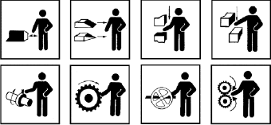
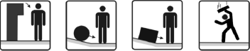

(1) Nach der TRBS 1111 "Gefährdungsbeurteilung" sind alle mechanisch bedingten Gefährdungen ("mechanische Gefährdungen") zu ermitteln, die beim Verwenden eines Arbeitsmittels auftreten können. Mechanische Gefährdungen im Sinne dieser TRBS sind:
| Gefährdungen durch | Typische Gefahrstellen oder Gefahrquellen |
| kontrolliert bewegte ungeschützte Teile | z. B. Quetsch-, Scher-, Stoß-, Stich-, Schneid-, Fang- oder Einzugsstellen  |
| unkontrolliert bewegte Teile | z. B. Kippen, Pendeln, Rollen, Gleiten, Wegfliegen, Herabfallen, Medien, die herausgeschleudert werden  |
| gefährliche Oberflächen | z. B. Stoßstellen, Ecken, Kanten, Spitzen, Schneiden, raue Oberflächen, scharfkantige Späne oder Splitter, tiefkalte oder heiße Oberflächen |
| Sturz, Ausrutschen, Stolpern, Umknicken | z. B. ungeeignete Zugänge oder Bedienplätze sowie zum Begehen ungeeignete Oberflächen von Arbeitsmitteln |
| Transport von Lasten, das Verwenden mobiler Arbeitsmittel | z. B. An- oder Überfahren, Aufprallen, Umkippen, Quetschen |
(2) Ergänzende Maßnahmen zum Schutz vor mechanischen Gefährdungen durch mobile Arbeitsmittel werden in einem separaten Teil dieser TRBS behandelt.
(3) Die Gefährdung von Personen durch Absturz zählt nicht zum Anwendungsbereich dieser TRBS (vgl. TRBS 2121).